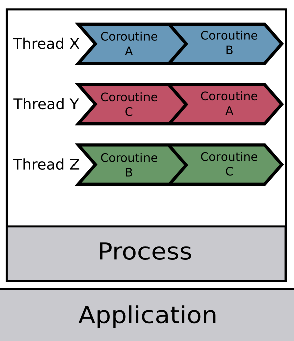

Processes, Threads, Coroutines and Goroutines

goroutine 基本上就在 coroutine 的位置，同時也可以從命名看出它們的關聯。
goroutine 由 go runtime管理，當 blocking 時就會另起新的 thread 來處理其他 routine
Process
- PID = Process ID
- 每個 processor ，也就是我們所說CPU 單核、雙核、多核的「核」，一次處理一個process
- process 是分配記憶體的對象
- 每個 process 是互相獨立的
- thread 的容器
Thread
- 分配 CPU time 的對象，也是實際實行 program 的最小單位
- 有些程式語言可以直接處理 thread (PHP, Java)
- 同一個 process 上的 thread 可共享記憶體